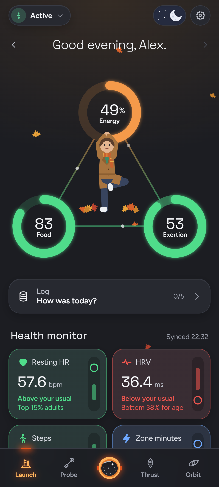
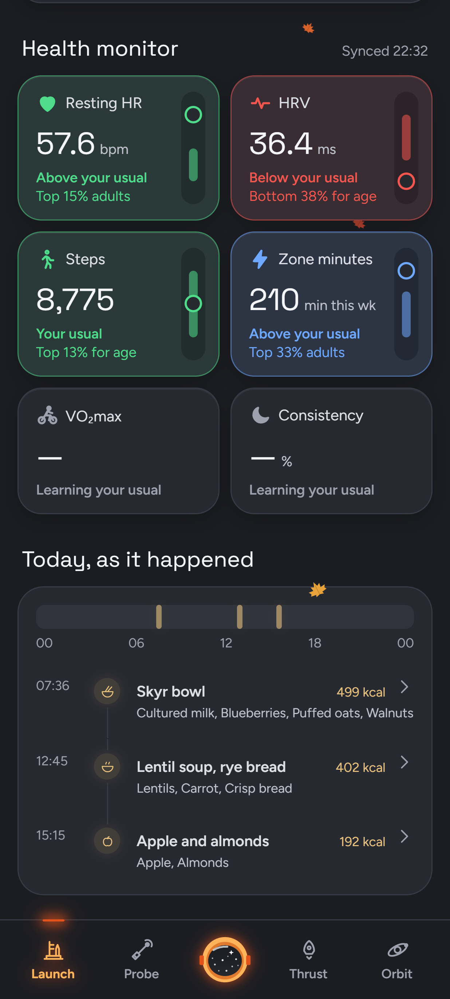
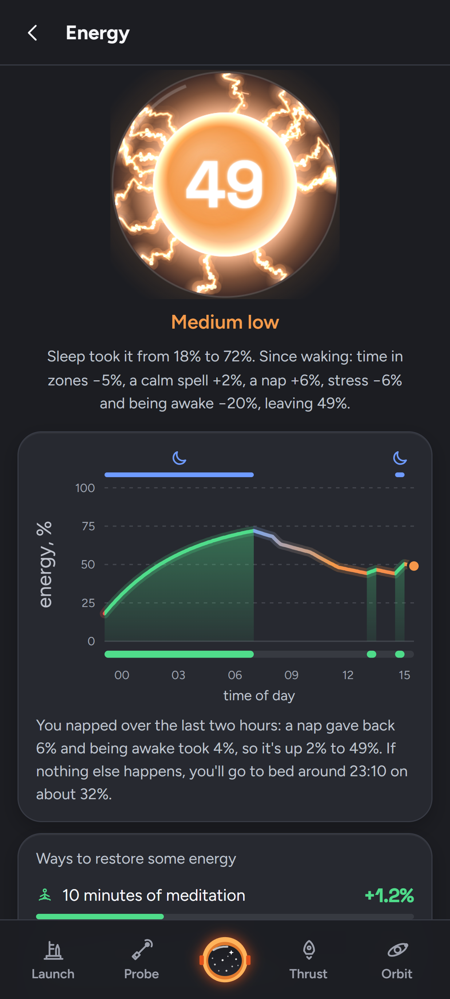
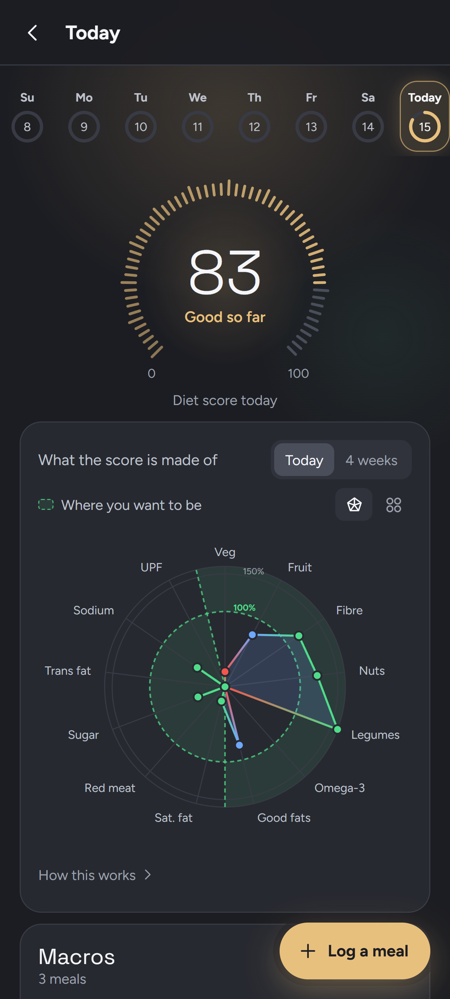

Your watch already knows. Ambrose tells you what it means.
Energy, recovery, food, training and how fast you're aging, from the data your watch or ring writes to Health Connect. Every number is worked out on your phone. There's no account, and no Ambrose server.
Join the test Android, by invitation, while Ambrose is in testing.
Your body today, at a glance.
Three rings around you, a health monitor that knows your usual, and the day as it happened.
- Energy, food and exertion in three rings, with you in the middle
- Resting heart rate, HRV, steps and zone minutes against your own usual and people your age
- The day on a timeline: meals, workouts and sleep

How much you have left today.
Energy starts the day at your recovery and runs down while you're awake, faster in hard training and stressful spells. A nap or a calm moment gives some back. Ambrose says in plain words what moved it, and where you'll be by bedtime.
- Built on published models of sleep pressure, training load and stress
- Ways to restore some, and how much each would give back

A diet score that means something.
Log a meal by searching, scanning its barcode or choosing one you eat often. Ambrose scores the day on what matters for a long life: vegetables, fruit, fibre, legumes, nuts and good fats, against red meat, sugar, salt and ultra-processed food.

What moves your numbers.
Probe looks for links in your own days: more sleep and your mood the next day, a late coffee and your night, steps and your HRV. It tells you how sure it is, and only calls a link confirmed when your data holds it up.

Train hard on the right days.
Start a workout and log it as you go, and see how your training load sits against the range that suits you.
- Training load over the last week: building, maintaining or easing off
- Activity for every day of the last six months
- Time trained, cardio focus and zone minutes over 30 days

How fast you're aging.
Your pace of aging from your fitness, sleep, training and diet, built from published research. 0.91× means each calendar year costs your body eleven months. Orbit shows what makes up your pace, and which part has the most room to move.

Your data stays on your phone.
Ambrose reads Health Connect and does the rest on the phone. Something leaves it only when you use a feature that needs it.
No account
Nothing to sign up for, and no Ambrose server holding your data. Uninstalling deletes Ambrose's copy.
AI only if you want it
AI is off by default. Turn it on with the AI service of your choice, even one on your own computer.
Read-only
Ambrose never writes to Health Connect, and you can take any permission away there at any time.
Join the test.
Ambrose is in testing on Android, with a small group of people who wear a watch or ring every day. Testers get each new version the day it's made, and their feedback shapes what comes next.
Ask for an invite